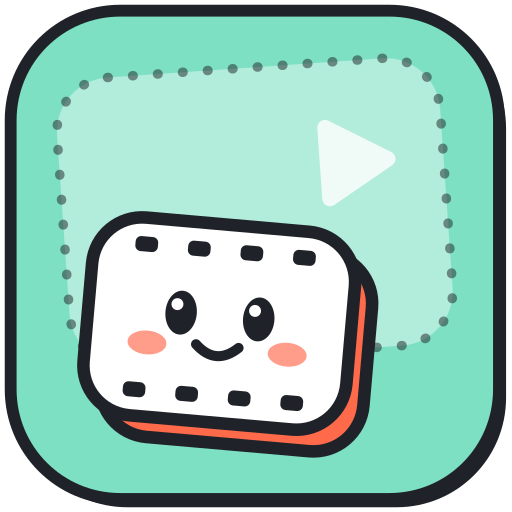

Keep
Marks the video as reviewed. With Hide Kept on, it won't show up again unless you ask. Nothing in Photos changes.

Slimreel DownloadFind the big videos filling your iCloud, and get the space back without losing a thing. Slimreel lists every video in your Photos library by size, so you can keep, delete, move or shrink each one.
Photos can show you your videos, but not which ones are taking up the room. Slimreel reads your library and puts the biggest at the top.
Every video with its size, length, megabytes per minute, date and resolution. Click one to watch it in the preview player before you decide.
A timeline shows how much video each month added. Drag across it to pick a date range, or use a preset: Last 30 days, Last 12 months, Older than 1, 3 or 5 years, or a single year.
Set a minimum size to see only the heavy ones, and turn on Hide Kept so videos you've already decided about stay out of the way.
Pick one video or select several. Each action says what it will do before it does it.
Marks the video as reviewed. With Hide Kept on, it won't show up again unless you ask. Nothing in Photos changes.
Saves the original, and the edited version if there is one, to a folder you choose. A network drive or NAS works too. Each copy's size is checked byte for byte, and free space is checked first. Then the video is removed from Photos.
Replaces the video with a smaller copy: 1080p at 60 fps in HEVC, which keeps HDR, or 720p at 30 fps in H.264. The date, location, favourite, hidden state and albums carry over, and your edits are baked in.
Sends the video to Recently Deleted in Photos. Photos asks you to confirm first, and you can recover it from there until Photos empties it.
Turn on “save the full-quality original to a folder first” when you shrink. The original goes to your drive, and the small copy stays in Photos where you can still find it.
These are your videos, so Slimreel is careful with them, and exact about what each step does.
72 MB → 8.9 MB
A 4K 120 fps clip, shrunk to 1080p at 60 fps.
42 MB → 7.8 MB
Another clip from the same library. Your own results depend on the video.
Nothing is removed until its copy has been checked byte for byte, and Photos asks you before anything is deleted.
Slimreel reads your Photos library on your own machine. It makes no network requests, there's no account, and the only permission it asks for is Photos, because that's where your videos are.
Small print: Photos itself may download a video's original from iCloud when you preview, move or shrink it. This website has no analytics, no cookies and no trackers. Slimreel is an independent project and isn't affiliated with Apple.
When Recently Deleted is emptied. Videos you delete, move or shrink go there first, and Photos keeps them for a while in case you change your mind. The space returns when Photos empties it, or when you do.
Yes, some. A 4K 120 fps video becomes 1080p at 60 fps, or 720p at 30 fps if you choose the smaller setting. If you'd like the full-quality file as well, turn on “save the full-quality original to a folder first”.
Photos won't sort your videos by size, so finding the big ones means opening them one at a time. And it has no way to make a video smaller while keeping its place in your library.
Shrink skips them. You can still keep, move or delete them.
Yes. Move to Folder works with network drives, including SMB shares. Slimreel checks there's enough free space before it starts, and checks each copy's size byte for byte before the video is removed from Photos.
Any Mac with macOS 14 or later. It's a universal app, so it runs on Apple silicon and Intel.
Yes. Free to download, no account, no ads, and the source is on GitHub under the GPL-3.0 licence.
No. Slimreel is an independent project and isn't affiliated with Apple. iCloud, Photos and Mac are trademarks of Apple Inc.
Free & open source · Requires macOS 14 or later · Apple silicon and Intel